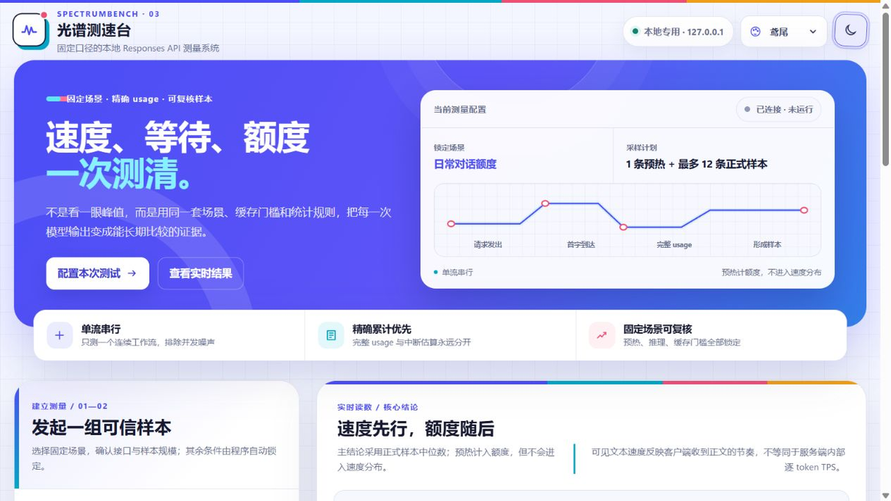

LOCAL-FIRST · AUDITABLE
首字等多久、每秒多少字、
这一次花了多少钱。
锁定场景、预热策略和缓存规则，以完整 usage 为准——给你一个下次还能复现的数字。
无网络演示本页使用合成读数，不读取 Key，也不调用任何 API。

METHOD SELECTOR
三种固定场景，一套统一口径
六轮真实结对编程对话，观察上下文增长与自然缓存。
锁定场景、预热策略和缓存规则，以完整 usage 为准——给你一个下次还能复现的数字。

六轮真实结对编程对话，观察上下文增长与自然缓存。